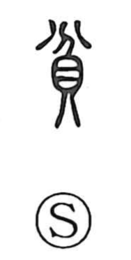

貧

Uncategorized
Kun: mazushii | On: hin, bin
poor ・ poverty ・ scant ・ few
Explanation
A compound formed from 分, “to divide,” and 貝, the cowry shell that symbolized wealth and property. 貧 pictures the dividing up of one’s cowries—partitioning one’s estate until what remains is scant—so it comes to mean poor, and by extension, few. The term already appears in the Book of Odes, in the Bei Feng (North Gate) poems, where it evokes a state of poverty.